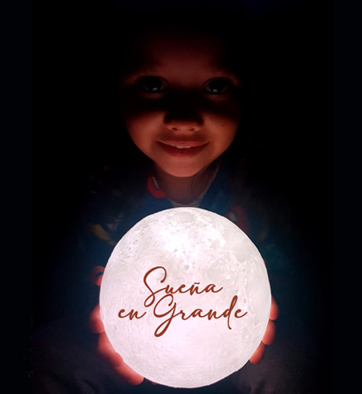

Esta galería muestra una selección de mis trabajos visuales, desde diseño gráfico hasta fotografía conceptual. Cada imagen representa una narrativa, una emoción o una solución visual estratégica.
Identidad oculta, mensaje directo: el diseño como acto de resistencia visual.

La infancia como faro creativo: soñar en grande es el primer acto de diseño.Diseñar espacios es contar historias: cada plano, una memoria en construcción.Rostro y trazo: la identidad se dibuja entre líneas y silencios.Historia, danza y deber: los diseños institucionales que celebra la identidad.Fuerza, diversidad y compromiso: el diseño como homenaje a la mujer en el mundo.Entre sombras y aviones: los posters publicitarios que necesitan tus proyectos.Cada trazo libera una idea: el despertar creativo comienza con una chispa dorada.